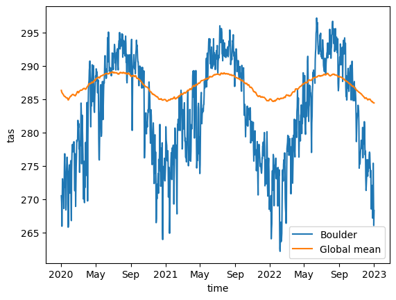
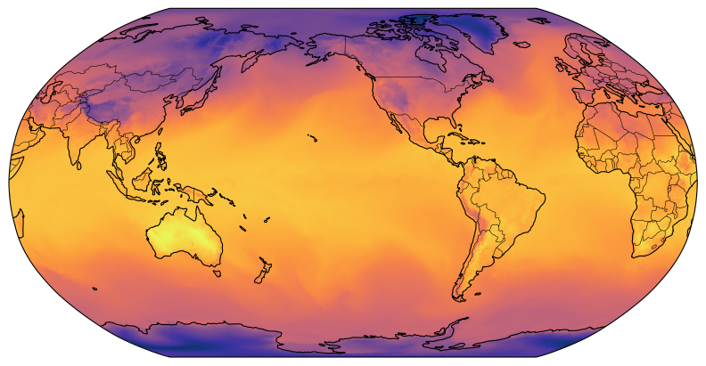
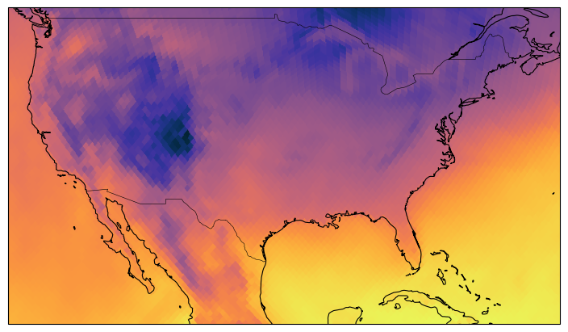

easy.gems for HEALPix Analysis & Visualization#
In this section, you’ll learn:#
Utilizing intake to open a HEALPix data catalog
Using the
healpixpackage to perform HEALPix operations to look at basic statisticsPlotting HEALPix data via easy.gems functionality
Prerequisites#
Concepts |
Importance |
Notes |
|---|---|---|
Necessary |
Time to learn: 30 minutes
Open data catalog#
Note
If you think that you first need to learn about Intake, Pythia’s Intake Cookbook is a great resource to do so.
Let us use the online data catalog from the WCRP’s Digital Earths Global Hackathon 2025’s catalog repository using intake and read the output of the ICON simulation run ngc4008, which is stored in the HEALPix format:
import intake
# Hackathon data catalogs
cat_url = "https://digital-earths-global-hackathon.github.io/catalog/catalog.yaml"
cat = intake.open_catalog(cat_url).online
model_run = cat.icon_ngc4008
Note
We highly recommend checking out the easy.gems documentation on HEALPix data catalogs to understand the zoom and time parametrization of the model runs in the catalogs. In short, each model run has an independent Dataset for each combination of the zoom and time parameters as depicted below (image credit easy.gems documentation on HEALPix data catalogs, and “PT30M” in this figure should be “PT15M”, 15 minutes, for the hackathon data we are using here)

Explore datasets#
So, the coarsest dataset in this model run would be as follows (Even if we called it without specifying any parameters, i.e. model_run.to_dask(), the result would be same as the ds_coarsest below since this model run defaults to the coarsest settings):
ds_coarsest = model_run(zoom=0, time="P1D").to_dask()
ds_coarsest
/home/runner/micromamba/envs/healpix-cookbook-dev/lib/python3.13/site-packages/intake_xarray/base.py:21: FutureWarning: The return type of `Dataset.dims` will be changed to return a set of dimension names in future, in order to be more consistent with `DataArray.dims`. To access a mapping from dimension names to lengths, please use `Dataset.sizes`.
'dims': dict(self._ds.dims),
<xarray.Dataset> Size: 883MB
Dimensions: (time: 10958, depth_half: 73,
cell: 12, level_full: 90, crs: 1,
depth_full: 72,
soil_depth_water_level: 5,
level_half: 91,
soil_depth_energy_level: 5)
Coordinates:
* crs (crs) float32 4B nan
* depth_full (depth_full) float32 288B 1.0 ... 5....
* depth_half (depth_half) float32 292B 0.0 ... 5....
* level_full (level_full) int32 360B 1 2 3 ... 89 90
* level_half (level_half) int32 364B 1 2 3 ... 90 91
* soil_depth_energy_level (soil_depth_energy_level) float32 20B ...
* soil_depth_water_level (soil_depth_water_level) float32 20B ...
* time (time) datetime64[ns] 88kB 2020-01-0...
Dimensions without coordinates: cell
Data variables: (12/103)
A_tracer_v_to (time, depth_half, cell) float32 38MB ...
FrshFlux_IceSalt (time, cell) float32 526kB ...
FrshFlux_TotalIce (time, cell) float32 526kB ...
Qbot (time, cell) float32 526kB ...
Qtop (time, cell) float32 526kB ...
Wind_Speed_10m (time, cell) float32 526kB ...
... ...
vas (time, cell) float32 526kB ...
w (time, depth_half, cell) float32 38MB ...
wa_phy (time, level_half, cell) float32 48MB ...
zg (level_full, cell) float32 4kB ...
zghalf (level_half, cell) float32 4kB ...
zos (time, cell) float32 526kB ...Now, let us look at a dataset with finer zoom level still with the coarsest time and another dataset with a finer zoom level and the finest time (which may be useful for daily analyses) dataset:
ds_fine = model_run(zoom=7).to_dask()
ds_fine
/home/runner/micromamba/envs/healpix-cookbook-dev/lib/python3.13/site-packages/intake_xarray/base.py:21: FutureWarning: The return type of `Dataset.dims` will be changed to return a set of dimension names in future, in order to be more consistent with `DataArray.dims`. To access a mapping from dimension names to lengths, please use `Dataset.sizes`.
'dims': dict(self._ds.dims),
<xarray.Dataset> Size: 14TB
Dimensions: (time: 10958, depth_half: 73,
cell: 196608, level_full: 90, crs: 1,
depth_full: 72,
soil_depth_water_level: 5,
level_half: 91,
soil_depth_energy_level: 5)
Coordinates:
* crs (crs) float32 4B nan
* depth_full (depth_full) float32 288B 1.0 ... 5....
* depth_half (depth_half) float32 292B 0.0 ... 5....
* level_full (level_full) int32 360B 1 2 3 ... 89 90
* level_half (level_half) int32 364B 1 2 3 ... 90 91
* soil_depth_energy_level (soil_depth_energy_level) float32 20B ...
* soil_depth_water_level (soil_depth_water_level) float32 20B ...
* time (time) datetime64[ns] 88kB 2020-01-0...
Dimensions without coordinates: cell
Data variables: (12/103)
A_tracer_v_to (time, depth_half, cell) float32 629GB ...
FrshFlux_IceSalt (time, cell) float32 9GB ...
FrshFlux_TotalIce (time, cell) float32 9GB ...
Qbot (time, cell) float32 9GB ...
Qtop (time, cell) float32 9GB ...
Wind_Speed_10m (time, cell) float32 9GB ...
... ...
vas (time, cell) float32 9GB ...
w (time, depth_half, cell) float32 629GB ...
wa_phy (time, level_half, cell) float32 784GB ...
zg (level_full, cell) float32 71MB ...
zghalf (level_half, cell) float32 72MB ...
zos (time, cell) float32 9GB ...ds_finesttime = model_run(zoom=6, time="PT15M").to_dask()
ds_finesttime
/home/runner/micromamba/envs/healpix-cookbook-dev/lib/python3.13/site-packages/intake_xarray/base.py:21: FutureWarning: The return type of `Dataset.dims` will be changed to return a set of dimension names in future, in order to be more consistent with `DataArray.dims`. To access a mapping from dimension names to lengths, please use `Dataset.sizes`.
'dims': dict(self._ds.dims),
<xarray.Dataset> Size: 1TB
Dimensions: (crs: 1, time: 1051968, cell: 49152)
Coordinates:
* crs (crs) float32 4B nan
* time (time) datetime64[ns] 8MB 2020-01-01T00:15:00 ... 2050-01-01
Dimensions without coordinates: cell
Data variables:
pr (time, cell) float32 207GB ...
qv2m (time, cell) float32 207GB ...
rlut (time, cell) float32 207GB ...
rsds (time, cell) float32 207GB ...
sfcwind (time, cell) float32 207GB ...
tas (time, cell) float32 207GB ...HEALPix basic stats with thehealpix package#
Let us look at the global and Boulder, CO, USA temperature averages for a 3-year time-slice of the whole dataset.
For this, we will first need to define a few HEALPix helper functions to get the nest and nside values from the dataset, then find the HEALPix pixel that Boulder coords fall in, and finally plot those temporal averages using matplotlib.
import healpix as hp
import matplotlib.pylab as plt
HEALPix helper functions#
def get_nest(ds):
return ds.crs.healpix_order == "nest"
def get_nside(ds):
return ds.crs.healpix_nside
HEALPix pixel containing Boulder’s coords#
%%time
boulder_lon = -105.2747
boulder_lat = 40.0190
boulder_pixel = hp.ang2pix(
get_nside(ds_fine), boulder_lon, boulder_lat, lonlat=True, nest=get_nest(ds_fine)
)
CPU times: user 207 μs, sys: 58 μs, total: 265 μs
Wall time: 268 μs
Global and Boulder’s temperature averages#
%%time
time_slice = slice("2020-01-02T00:00:00.000000000", "2023-01-01T00:00:00.000000000")
ds_fine.tas.sel(time=time_slice).isel(cell=boulder_pixel).plot(label="Boulder")
ds_coarsest.tas.sel(time=time_slice).mean("cell").plot(label="Global mean")
plt.legend()
CPU times: user 303 ms, sys: 189 ms, total: 492 ms
Wall time: 2.05 s
<matplotlib.legend.Legend at 0x7fabf0316510>

Plotting with easy.gems and cartopy#
In this part, we will look at the healpix_show function that is provided by easy.gems for convenient HEALPix plotting.
import easygems.healpix as eghp
import cartopy.crs as ccrs
import cartopy.feature as cf
import cmocean
Global plots#
Most of this is matplotlib and cartopy code, but have a look at how eghp.healpix_show() is called. The following code will plot global temperature (at the first timestep for simplicity)
projection = ccrs.Robinson(central_longitude=-135.5808361)
fig, ax = plt.subplots(
figsize=(8, 4), subplot_kw={"projection": projection}, constrained_layout=True
)
ax.set_global()
eghp.healpix_show(ds_fine.tas.isel(time=0), ax=ax, cmap=cmocean.cm.thermal)
ax.add_feature(cf.COASTLINE, linewidth=0.8)
ax.add_feature(cf.BORDERS, linewidth=0.4)
<cartopy.mpl.feature_artist.FeatureArtist at 0x7fabf02a3b10>
/home/runner/micromamba/envs/healpix-cookbook-dev/lib/python3.13/site-packages/cartopy/io/__init__.py:241: DownloadWarning: Downloading: https://naturalearth.s3.amazonaws.com/110m_physical/ne_110m_coastline.zip
warnings.warn(f'Downloading: {url}', DownloadWarning)
/home/runner/micromamba/envs/healpix-cookbook-dev/lib/python3.13/site-packages/cartopy/io/__init__.py:241: DownloadWarning: Downloading: https://naturalearth.s3.amazonaws.com/110m_cultural/ne_110m_admin_0_boundary_lines_land.zip
warnings.warn(f'Downloading: {url}', DownloadWarning)

Regional plots#
If plotting a region of interest is desired, it is also possible through setting extents of the matplotlib plot.
Let us look into USA map using the Boulder, CO, USA coords we had used before for simplicity:
projection = ccrs.Robinson(central_longitude=boulder_lon)
fig, ax = plt.subplots(
figsize=(8, 4), subplot_kw={"projection": projection}, constrained_layout=True
)
ax.set_extent([boulder_lon-20, boulder_lon+40, boulder_lat-20, boulder_lat+10], crs=ccrs.PlateCarree())
eghp.healpix_show(ds_fine.tas.isel(time=0), ax=ax, cmap=cmocean.cm.thermal)
ax.add_feature(cf.COASTLINE, linewidth=0.8)
ax.add_feature(cf.BORDERS, linewidth=0.4)
<cartopy.mpl.feature_artist.FeatureArtist at 0x7fabe03aca50>
/home/runner/micromamba/envs/healpix-cookbook-dev/lib/python3.13/site-packages/cartopy/io/__init__.py:241: DownloadWarning: Downloading: https://naturalearth.s3.amazonaws.com/50m_physical/ne_50m_coastline.zip
warnings.warn(f'Downloading: {url}', DownloadWarning)
/home/runner/micromamba/envs/healpix-cookbook-dev/lib/python3.13/site-packages/cartopy/io/__init__.py:241: DownloadWarning: Downloading: https://naturalearth.s3.amazonaws.com/50m_cultural/ne_50m_admin_0_boundary_lines_land.zip
warnings.warn(f'Downloading: {url}', DownloadWarning)

Further easy.gems and healpix#
These are only a sampling of HEALPix and easy.gems capabilities; if you are interested in learning more, be sure to check out the usage examples at the easy.gems HEALPix Documentation.
What is next?#
The next section will provide an UXarray workflow that loads in and analyzes & visualizes HEALPix data.